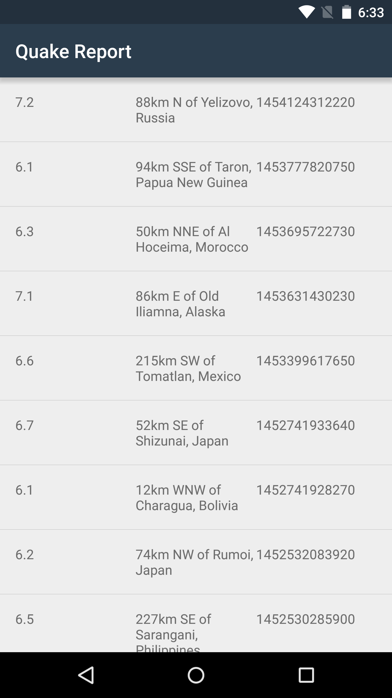
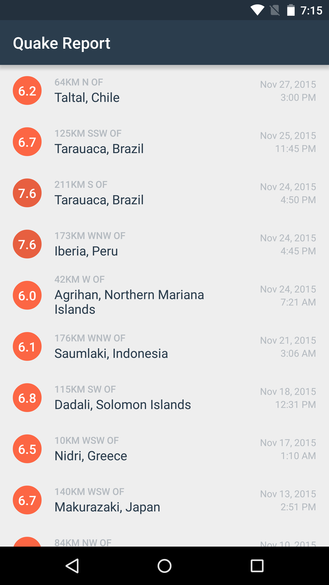

19. Display date and time of earthquake
Display date and time of earthquake
The next series of coding tasks are about improving the UI to make it match the design mocks provided by our designer. This is familiar to the visual polish steps covered in the last course where you built the Miwok language app.
The nodes will be presented in a written text format to make it easier for you to see all the steps one-by-one. Any new topics that come up will be explained in-line, but the focus of this course is on networking and not on user interface, so don’t worry if you don’t become an expert on the upcoming topics. If you want more practice with Java programming, we highly suggest that you take the the time to methodically work on these upcoming coding tasks.
Let’s start by updating the way that we display the information for when an earthquake happened. In the current state of our app, I can easily see the magnitude and location of each earthquake, but the time is a long sequence of numbers. The time for the first earthquake is 1454124312220, which isn't in the most helpful format.

Let’s revisit our design mocks. We can see the date and time displayed on separate lines for each earthquake, which is much more readable.

How do we go from the time in milliseconds to the date/time format that we want? First, let’s understand what the time in milliseconds represents.
Unix Time
This format is called Unix time, and it's describes a time as the number of milliseconds that have passed since midnight 1970 in England (Coordinated Universal Time, if you want to get technical). We need to turn this Unix time into a more readable date and time, but that's a very tricky proposition. You'd probably want to display the time in the correct local time zone for the user, but time zones are incredibly complex. Also depending on where you are in the world, dates are written differently.
For more info on Unix time, check out this video.
Date Formatting
Thankfully, you don't have to handle date formatting yourself. There's a fantastic class called SimpleDateFormat that knows all about time zones and how dates are written in different parts of the world, and will handle all this complexities for you.
You supply a desired time format such as: "yyyy-MM-dd HH:mm:ss"
In the time format syntax, characters have special meaning, which is described in detail in this table.
- “y” stands for year, “yyyy” stands for a 4-digit year like 2016.
- “M” stands for month, “MM” stands for a 2-digit month like 03.
- “d” stands for day, “dd” stands for a 2-digit day like 10.
- “H” stands for hour.
- “m” stands for minute in hour.
- “s” stands for second in minute.
Any characters that are not listed in the table of special characters, are used directly in the output string. If the time format string contains a colon or dash or comma, for example, then the output string will also contain the same punctuation symbol in that direct location.
Here’s an example for the time 1463159138711 milliseconds. We create a SimpleDateFormat object with the format "yyyy-MM-dd HH:mm:ss a", and pass in a Date object initialized with the time 1463159138711 milliseconds, and then the date will be formatted as “2016-05-13 12:07:46 PM”.
This is the code. First convert the time in milliseconds into a Date object by calling the Date constructor.
long timeInMilliseconds = 1454124312220L;
Date dateObject = new Date(timeInMilliseconds);Then we can initialize a SimpleDateFormat instance and configure it to provide a more readable representation according to the given format.
SimpleDateFormat dateFormatter = new SimpleDateFormat("MMM DD, yyyy");
String dateToDisplay = dateFormatter.format(dateObject);After these 4 lines of code are executed, the value of dateToDisplay is a beautifully formated date: “Jan 29, 2016”.
If Android Studio doesn’t recognize these classes, you may need to manually import them at the top of the file.
import java.text.SimpleDateFormat;
import java.util.Date;